2026 年 10 月 20 日 周一 · GitHub Trending + Hacker News
今日关键词：代码的生产关系、扩散模型、开源commons。
今天最值得读的不是某个新模型，而是一位 Ruby 维护者的告别信：他把自己所有的 gem 归档了，理由是"这个共有的代码库正在被大公司露天开采，去喂养那些反过来污染它的机器"。同一天，PostgreSQL 因为 AI 代码审查的"质检标准变高"，在 beta 期回滚了 8 到 10 个功能。AI 写代码这件事，开始反噬代码本身。
数据截至 2026-10-20 上午，按"今日新增 Star"排序。
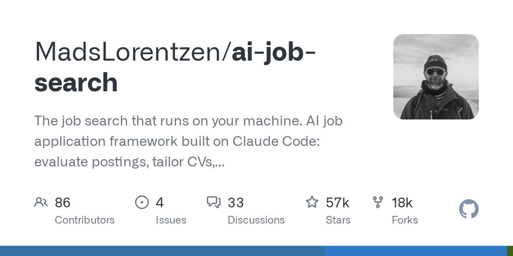
🏷️ 基本信息
📖 项目介绍
一个跑在本地的求职框架，基于 Claude Code：评估职位、定制简历、写求职信、准备面试。官方一句话很直接——"Fork it and own it."
✨ 技术亮点
🎯 适合场景
正在找工作、需要批量处理职位但不想牺牲定制化的人；也适合作为垂直领域 Agent 的参考实现。
📚 学习价值
求职是"高重复 + 强个性化"的典型任务。看它在哪里保留人工确认，比看它用了什么提示词更有价值。
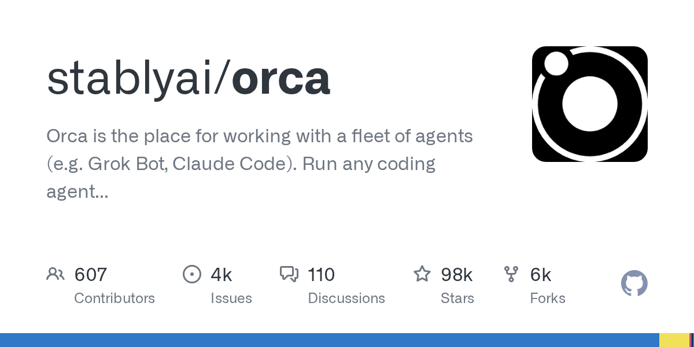
🏷️ 基本信息
📖 项目介绍
多 Agent 工作台：可以用自己的订阅运行任意编码 Agent（如 Grok Bot、Claude Code），统一管理一组并行工作的智能体。
✨ 技术亮点
🎯 适合场景
同时推进多个任务的重度用户、需要并行探索方案的小团队。
📚 学习价值
多 Agent 的难点不是"开几个"，而是任务怎么分、结果怎么合、冲突怎么解。
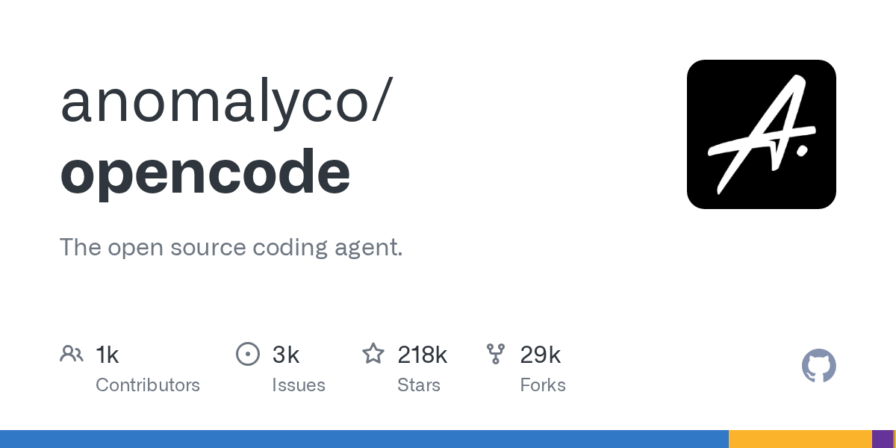
🏷️ 基本信息
📖 项目介绍
开源编码 Agent。两天前刚发生用户密钥泄露事件（旧系统被入侵），官方建议用户吊销并更换第三方模型密钥。
✨ 技术亮点
🎯 适合场景
希望把编码 Agent 接进自己工作流、且愿意自行审查安全的团队。
📚 学习价值
采用速度和信任建设，可以完全脱节。这一课比任何功能文档都值钱。
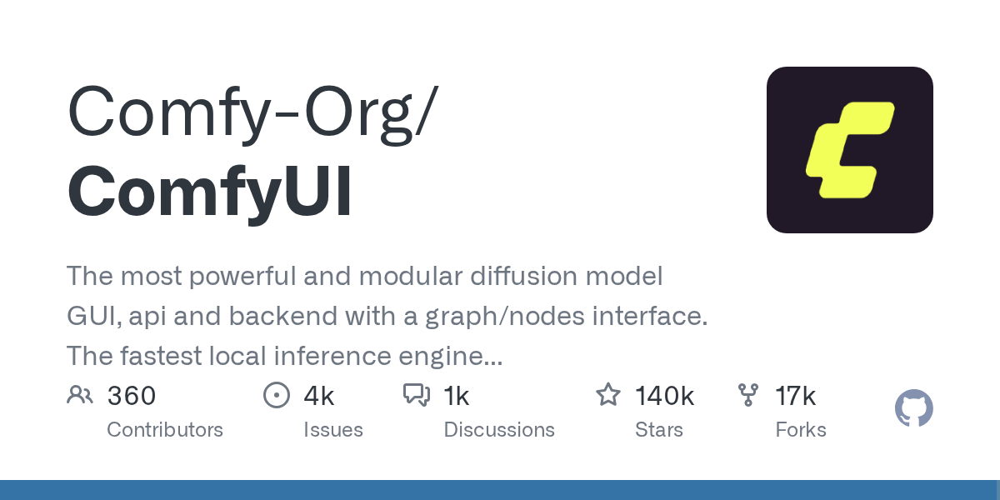
🏷️ 基本信息
📖 项目介绍
最强大的模块化扩散模型 GUI / API / 后端之一：用图（graph）和节点（nodes）组织生成流程，图片、视频、音频都能接。
✨ 技术亮点
🎯 适合场景
需要精细控制生成流程的创作者、搭建生成式 AI 服务的团队。
📚 学习价值
它是"工作流即程序"的典型样本：当模型能力被封装成节点，创意工作就变成了连线和调参。这也是一种新的编程范式。
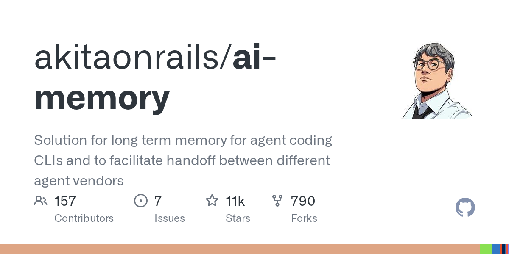
🏷️ 基本信息
📖 项目介绍
为编码 Agent 提供长期记忆，并支持在不同厂商的 Agent 之间交接工作——今天用 Claude Code，明天换工具，上下文不必从零开始。
✨ 技术亮点
🎯 适合场景
长期项目、多人多 Agent 协作、需要在不同编码工具之间切换的团队。
📚 学习价值
记忆正在从模型能力变成基础设施。谁能把记忆做成人人可以接手的格式，谁就掌握了工作流的切换成本。
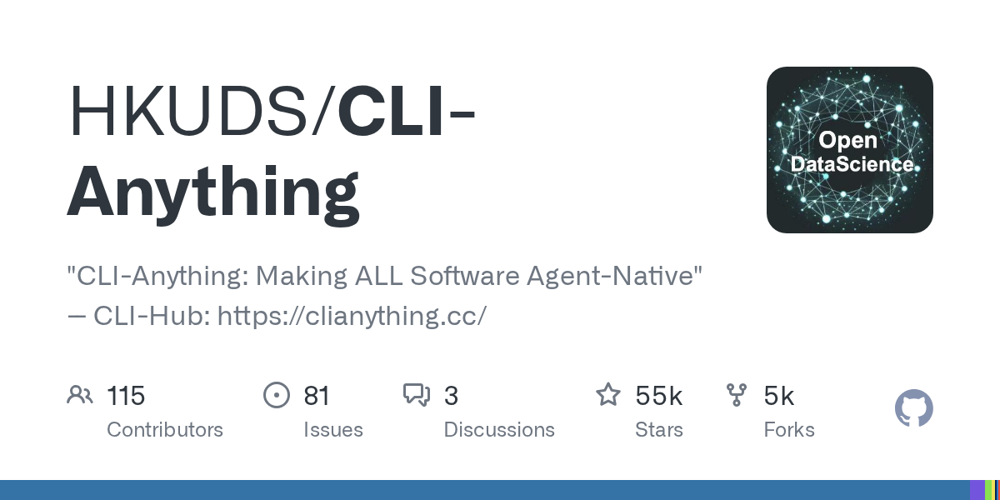
🏷️ 基本信息
📖 项目介绍
"Making ALL Software Agent-Native"：把各种软件包装成 Agent 可调用的 CLI 接口，并提供 CLI-Hub 作为集散地。
✨ 技术亮点
🎯 适合场景
需要让 Agent 操作现有软件、又没有官方 API 的场景。
📚 学习价值
它押注一个朴素判断：命令行是机器之间最稳定的契约。在 MCP 之外，这是一条值得关注的路线。
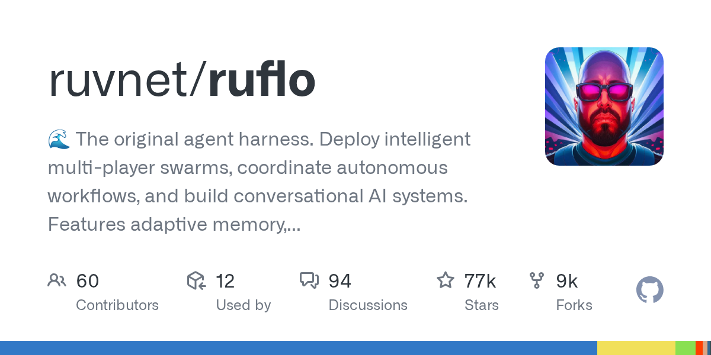
🏷️ 基本信息
📖 项目介绍
自称 "the original agent harness"：部署多智能体集群、协调自主工作流、构建对话式 AI 系统。
✨ 技术亮点
🎯 适合场景
需要多个 Agent 分工协作的自动化流程、研究型项目。
📚 学习价值
多 Agent 系统的成败往往取决于协调层，而不是单个 Agent 有多聪明。
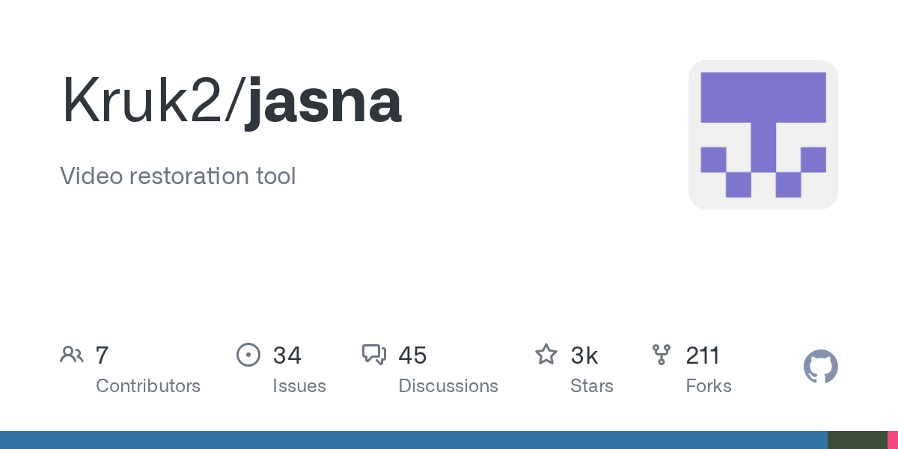
🏷️ 基本信息
📖 项目介绍
一个视频修复（video restoration）工具，用于改善老视频、低质量素材的画质。
✨ 技术亮点
🎯 适合场景
老影像数字化、素材抢救、视频创作者的前处理环节。
📚 学习价值
生成模型的热度之外，修复类任务往往更接近真实需求：不创造新内容，而是把已有内容救回来。
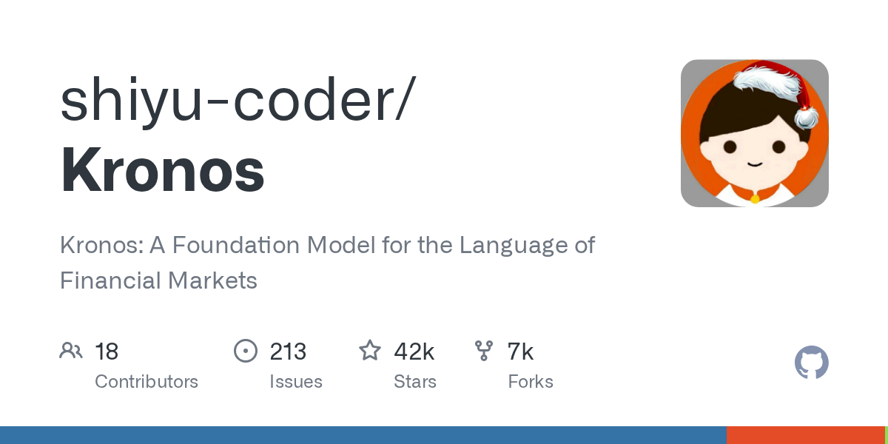
🏷️ 基本信息
📖 项目介绍
Kronos：一个面向金融市场的 foundation model，把 K 线等市场数据当作一种"语言"来建模。
✨ 技术亮点
🎯 适合场景
量化研究、金融时序预测的教学与实验。
📚 学习价值
把领域数据"语言化"是这两年的通用套路。但也要记住：金融数据的信噪比极低，回测漂亮不等于能赚钱。
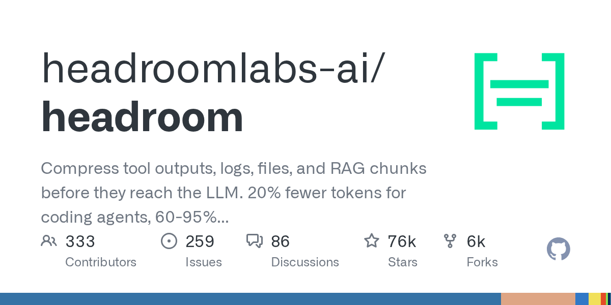
🏷️ 基本信息
📖 项目介绍
在工具输出、日志、文件和 RAG 分块进入 LLM 之前先做压缩，官方称可减少约 20% 的 token。
✨ 技术亮点
🎯 适合场景
工具调用密集的 Agent、长日志分析、RAG 成本敏感的应用。
📚 学习价值
Agent 的成本大头往往不是推理，而是反复搬运的上下文。压缩层的价值，会随着 Agent 变复杂而上升。
统计窗口：北京时间 2026-10-20 00:00 至发稿时，按 points 排序并去重。
Paul Battley 把自己维护多年的 Ruby gem 全部归档，并写了一封解释信。信里引用了 Matz 的两句话——"编程的乐趣"和"Ruby 是为人类设计的，不是为机器"——然后说：那个时代已经过去了。
他的理由有三层：
1. Rails 被一个人控制，而他认为此人的观点令他无法接受（社区正在尝试 fork）；
2. Ruby 语言本身现在已经大量使用 LLM Agent 开发，Matz 也在把 Ruby 重新定位为"AI 时代的编程语言"，并希望 LLM 能吃到更多人类写的好代码；
3. 于是问题出现了：大公司在露天开采这个共有代码库，用来喂养那些反过来污染它的机器。
他写了一句很狠的话：当有人说"手写代码已经不可持续"，他们没说错——但这就像"有人往床上拉了屎之后，睡床确实变得不可持续"。
这封信在 HN 拿到 423 分、393 条评论，是今天讨论最激烈的条目。支持者认为他点破了一个真实的结构性问题：开源作者付出，模型公司收割，污染再回到社区。反对者则认为这是把技术变迁道德化，且对 Matz 和 Rails 创始人的评价过于人身化。
值得所有人思考的部分：如果 AI 真的依赖人类代码作为养料，那么谁来维护这些养料的生产者？这不是情怀问题，是供应链问题。
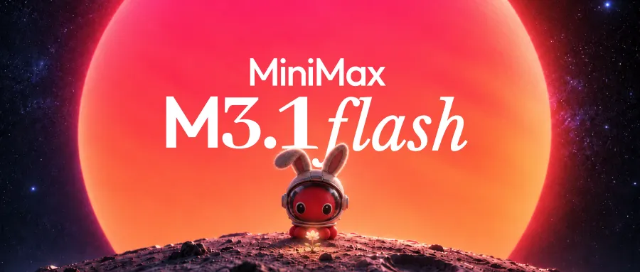
MiniMax 发布 M3.1 Flash，官方称这是一个"代际跃升"的 Flash 模型，重点全在 Agent 场景：
还有一个有趣的细节：官方披露，一个匿名运行的早期版本 "Space Bunny 🐰" 已经处理了超过 200 万亿 token——也就是说，模型在正式发布前，已经在真实流量里跑了很久。
看点：Flash 类模型的竞争，已经从"便宜"转向"在便宜的前提下能不能干活"。Agent 任务链条长、调用次数多，单次成本的小差距会被放大几十倍。$0.15 的输入价，基本把"用不起"这个借口拿掉了。
一个叫 Mac.apk 的项目冲上 HN：它让 Android 应用原生运行在 Apple Silicon Mac 上，不需要模拟器。
项目说明里几个关键点：
为什么值得关注：Mac 和 Android 原本是两个封闭生态，这种"应用层兼容"绕过了官方商店和分发渠道。它可能带来便利，也可能带来权限、隐私和版权的新问题——尤其是 Google 服务如何被"兼容"，通常经不起细看。
Inception Labs 发布 Mercury 3，核心结论只有一句：文本扩散模型可以 scale。
几个硬指标：
为什么这是条大新闻：过去两年，扩散语言模型一直被认为"快但不够聪明"，只能做草稿。Mercury 3 给出的证据是——自回归模型的 scaling law，在扩散模型上同样成立。
如果这个结论站得住，未来的推理基础设施会出现第二条技术路线：不是"一次生成一个 token"，而是"一次并行去噪一整段"。对延迟敏感的 Agent、语音、实时翻译，影响会非常直接。
Peter Eisentraut 写了一篇很坦诚的复盘：PostgreSQL 19 在 beta 期回滚了大约 8 到 10 个重要功能，有些还很晚。
他列出的原因里，最值得注意的一条是：
这些功能大多是很久以前写的，那时 LLM 辅助代码审查还没有现在这么有用。功能写完之后，质量门槛被抬高了。
换句话说，AI 审查工具变得更强，能在短时间内找出大量边界条件缺陷。于是你面前突然出现"四十份缺陷报告"——每个可能只需改三行，但处理每个都有固定开销，最后还是没时间。
另外两个原因是：部分功能本身有架构缺陷；以及"Vulnpocalypse"期间资深开发者都在修安全问题，beta 期原本该做的审查和测试被压缩了。
他特别强调：这不是 "vibe coding" 的锅，这些代码写在 vibe coding 出现之前。
这条新闻的意义：AI 不只是"帮你写代码"，它也在改变代码的验收标准。当机器审查比人更细，很多"当年合格"的代码会突然不合格。这是一场静悄悄的质量通胀。
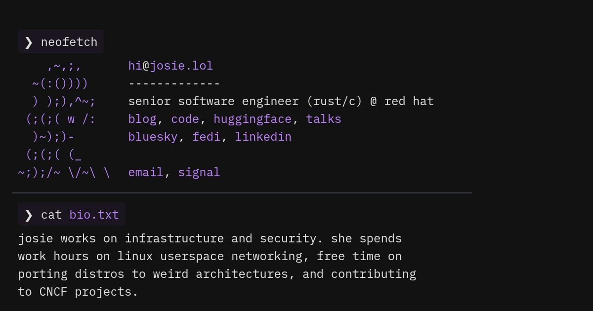
Josephine Pfeiffer 买了一台 ASUS ProArt P16：128 GB 内存、6,144 个 CUDA 核心、2 TB SSD。这台机器的卖点是 GPU 能访问超过 100 GiB 内存，很适合本地跑大模型。
问题是：官方只支持 Windows，而 Windows 的初始设置要求微软账号。她不想给，于是决定自己装 Arch Linux ARM。
结果比预期好：
为什么 HN 喜欢这篇：它同时踩中了三个点——本地大模型、Linux 桌面、以及"拒绝被账号体系绑架"。更重要的是，它证明了在新硬件上，"官方不支持"往往只是"还没人做"，而不是"做不到"。
据路透社报道，欧洲 9 月电动车销量同比增长 70.3%，市场份额升至约 三成（不同统计口径下为 32.6%）。
这个数字的背景是：
HN 的 139 条讨论里，争论集中在"政策驱动还是产品力驱动"。一个比较共识的判断是：当电动车的总拥有成本低于燃油车，政策只是加速器，不是根本原因。
HN 上一条只有 2 条评论、但拿到 120 分的新闻：乌克兰方面公布了一段用 aerial drone 撤离受伤士兵的行动。
这条新闻的技术看点不在无人机本身，而在它被用于"救人"而不是"攻击"：同样的飞行平台、同样的图传链路，任务载荷从炸弹换成了担架/吊舱。
战争是最残酷的技术试验场。很多民用无人机的能力——抗干扰、自主返航、精确投放——都是先在战场上被验证的。这一次，至少有一个案例是用在了撤离上。
HN 上出现一条消息：德国极右翼政党 AfD 有约 50 万份内部文件被泄露。
需要提醒的是：提交的域名 hexane.cc 当前被 Cloudflare 标记为 "Suspected Phishing"（疑似钓鱼）。也就是说，这个链接本身就可能是陷阱，不要直接点开、更不要输入任何凭据。
对这类"政治泄漏"新闻，安全的做法是：
OpenBSD 8.0 即将发布，开发者 Bryan Steele 提前放出了亮点清单：
为什么值得看：OpenBSD 一向以"保守、安全"著称，但这次在显卡和虚拟化上相当激进。把 Linux 的 DRM 栈持续跟进，意味着它正在认真对待桌面可用性，而不只是服务器和防火墙。
今天最重要的两条新闻，其实是同一件事的两面：
一边是生产端的倦怠，一边是验收端的通胀。两者叠加，开源社区会进入一个微妙阶段：代码总量在涨，愿意长期维护的人却在减少。
MiniMax M3.1 Flash 的 200+ TPS、Mercury 3 的 1,068 TPS，指向同一个方向：Agent 时代，延迟就是产品体验。
当模型能力差距缩小，用户会越来越难分辨"谁更聪明"，但一定能感知"谁更快、更便宜"。Flash 类模型和扩散模型，正在从两个方向夹击这个市场。
Mac.apk 让安卓应用跑在 Mac 上，Josephine 把 Linux 装进官方只支持 Windows 的笔记本。两个项目都在做同一件事：在厂商划定的边界之外，把硬件的可能性拿回来。
这背后是用户对"账号绑定、生态锁定、计划性淘汰"的持续反感。
OpenCode 密钥泄露还没过去几天，今天又出现一个被 Cloudflare 标记为钓鱼的"政治泄露"链接。信息越劲爆，越要先停三秒——这是 2026 年最基本的数字卫生。
日报由自动化管线生成，数据以原始链接为准。